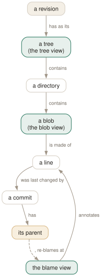

Day 08
Files through time
Tree to blob to blame, and walking back past the change you found.
By the end of today you can
- browse a repository as it was at any commit, not as it is on disk
- blame a file and then walk backwards through the commits that touched each line
- teach blame to follow code that was moved or copied between files
Browsing a repository that no longer exists
Everything so far has been organised by commit. These three views are organised by file, and they all share one property worth stating plainly: they show you the repository at a revision, not the files on your disk. Put the cursor on a commit from 2023, press t, and you are browsing 2023.
The tree view at the top of a repository:
Directory path /
drwxr-xr-x Ada Lovelace 2026-03-04 14:00 doc
drwxr-xr-x Ada Lovelace 2026-03-03 09:30 src
-rw-r--r-- Ada Lovelace 13 2026-03-01 10:00 README
Mode, author, size, date, name — and the title window holds the tree's own object ID. Enter descends into a directory or opens a file in the blob view; , goes back up. It is non-recursive by default (recurse-tree), which is the right call in any repository large enough to need browsing.

Blame, and the key that makes it useful
b on any file opens the blame view: every line prefixed with the commit that last touched it.
785f586 Ada Lovelace 2026-03-03 09:30 1│ void parse(void) {}
0000000 Not Committed Yet 2026-09-17 2│ // TODO: handle errors
Lines you have edited but not committed show as 0000000 with the author Not Committed Yet — blame is being precise rather than unhelpful: those lines are not in history yet.
Now the part most people never find. Blame usually answers “who last touched this”, which is frequently somebody who reindented the file in 2021. Put the cursor on such a line and press ,:
- tig takes the commit that owns the line under the cursor.
- It finds that commit's parent.
- It re-blames the file as it was at that parent — immediately before the change you were looking at.
Press it again and you step back another change. Four or five presses will usually take you past the reformatting, past the rename, and to the commit that actually introduced the logic. < retraces your way back down.
Teaching blame about moved code
The other way blame lies is about code that moved. Split a 500-line file in two and git will credit you with writing both halves, because as far as the default algorithm is concerned those lines are new in those files.
-C- Look for the lines in other files modified by the same commit.
-C -C- Also look at files the commit created.
-C -C -C- Search every file in the parent commit.
Try it one run at a time with tig blame -C -C -C <file>, and when you are convinced, make it the default with blame-options. It costs time proportional to how hard you make it look, and on any repository where you actually care about the answer it is worth it.
Getting out to your editor
e opens the file under the cursor in your editor, at the line you were on — tig passes +<line> before the filename when editor-line-number is on, which it is by default.
Which editor gets used runs down a hierarchy: TIG_EDITOR, then $GIT_EDITOR, then core.editor, then $VISUAL, then $EDITOR. The first of those exists so you can have a heavyweight editor for code and a light one for commit messages without them fighting.
Today's habit
Next time you are about to ask a colleague why some code is the way it is, spend ninety seconds with b and , first. More often than not the commit message answers it, and you will have found the person who actually knows rather than the person who last reindented it.
Tomorrow: the views that browse names instead of history.
New vocabulary
Keys
| Key | Does |
|---|---|
| t | Open the tree view at the current revision. |
| f | Open the blob view: the contents of the selected file. |
| b | Open the blame view for the selected file. |
| e | Open the file in your editor, at the line under the cursor. |
Commands
| Command | Does |
|---|---|
tig blame <file> | Start in the blame view for a file. |
tig blame <rev> -- <file> | Blame the file as it was at that revision. |
tig blame -C <file> | Blame with copy detection for one run. |
tig show <rev>:<path> | Show a file's contents at a revision. |
Options
| Option | Does |
|---|---|
blame-options | Default options for git blame. Empty by default. |
recurse-tree | Show every file recursively in the tree view. Default no. |
editor-line-number | Pass +<line> to the editor. Default yes. |
Today's configappend to ~/.tigrc
Make blame follow code that was moved or copied between files, instead of crediting whoever moved it. Three -C's widen the search to every file in the parent commit; it costs time on a big repository, and it is worth it every single time you use blame.
set blame-options = -C -C -C
tig reads this only at startup. Reload without quitting by binding :source ~/.tigrc to a key (Day 12), or check it with tig 2>&1 | head — errors arrive as tig warning: lines before the first view draws.
Drillsdo these in a real terminal, today
Self-check
Answer out loud first, then unfold.
You press , in the blame view and the whole file changes under you. What did it actually do?
It reloaded the blame for the parent of the commit that last touched the line under the cursor — that is, the state of the file immediately before that change landed.
This is the single most valuable key in the blame view. A line that says “reformatting” tells you nothing; press , and you see the file as it was before the reformatting, where the same line has a real commit behind it. Repeat until you reach the change that actually explains the code. < walks back down the chain.
Blame says a colleague wrote a hundred lines last Tuesday. They insist they only moved the file. Who is right, and which option settles it?
Both, and the default is the problem. Plain git blame attributes a line to the commit that put those bytes in that file, so moving code between files makes the mover the author of everything they moved.
-C tells blame to look for the lines in other files in the same commit; repeating it widens the search — -C -C also looks at files the commit created, and -C -C -C searches every file in the parent. Putting set blame-options = -C -C -C in your config makes this the default, at some cost in speed.
The tree view shows the top-level directories but you wanted to find a file three levels down without clicking through. What are your options?
The tree view is non-recursive by default — recurse-tree is no — so it shows one directory at a time and Enter descends. Setting it to yes lists every file in the repository at once, which is pleasant in a small repository and unusable in a large one.
The better tool for “find the file” is usually the grep view (g, tomorrow), or starting tig with a path. The tree view earns its place when you want to see structure as of a particular commit, which nothing else gives you.
You press e on a line in the blame view and your editor opens at line 1 instead of the line you were on. What is misconfigured?
editor-line-number is on by default and makes tig pass +<line> before the filename, as in vim +42 src/parser.c. If your editor command does not understand that convention — or is wrapped in a script that drops arguments — you land at the top.
Which editor tig uses is its own small hierarchy: TIG_EDITOR beats $GIT_EDITOR, which beats core.editor, then $VISUAL and $EDITOR. TIG_EDITOR exists precisely so you can use a different editor inside tig from the one git opens for commit messages.
Cheat sheet
File views. The second line is the one worth remembering.
t f b tree / blob / blame view for the current revision
, blame: re-blame at the PARENT of this line's commit
tree: go up one directory < retrace your steps
Enter descend a directory, or open the file
e open in $EDITOR at this line (TIG_EDITOR wins over GIT_EDITOR)
tig blame <rev> -- <file> blame the file as it was then
tig blame -C -C -C <file> follow code moved between files
set blame-options = -C -C -C # make that the default
# 0000000 / 'Not Committed Yet' = your own uncommitted edits
Everything through Day 08
Keys
| Key | Does |
|---|---|
| m | Open the main view — the one-line-per-commit list. |
| d | Open the diff view for the selected commit. |
| s | Open the status view: the working tree. S does the same. |
| h | Open the help view: every binding that is live right now. |
| q | Close this view and fall back to the one underneath. Quits if it is the last. |
| Q | Quit immediately, however deep the stack. |
| R | Reload the current view by re-running its git command. |
| v | Show the version — and prove which build you are on. |
| z | Stop all background loading. For when you opened a 200,000-commit history. |
| D | Cycle the date column: default, relative, compact, custom, hidden. |
| A | Cycle the author column: full, abbreviated, email, user, hidden. |
| X | Show or hide the abbreviated commit ID column. |
| G | Cycle the graph in the main view: v2, v1, off. |
| F | In the main view, show or hide the ref labels. |
| # | Show or hide line numbers. |
| ~ | Switch the line graphics between ASCII and the drawing characters. |
| o | Open the option menu: the same toggles, with their current values. |
| jk | Move the cursor down and up. Arrow keys work too, with a caveat on Day 3. |
| Enter | Open the selected line. From the main view, splits and shows the diff. |
| Tab | Move focus to the other view in a split. |
| UpDown | Move to the previous/next entry — in the parent view, even from the child. |
| JK | Same as the arrow keys: next and previous entry. |
| O | Maximise the focused view to fill the display. |
| < | Go back to the previous view state. |
| , | Move to the parent: the parent directory, or the parent commit. |
| Space- | Page down and page up. |
| C-dC-u | Half a page down and up. |
| ] | Increase the diff context by one line. |
| [ | Decrease the diff context by one line. |
| @ | Jump to the next chunk header. Implemented as a search — see today's gotcha. |
| % | Toggle the file filter: show the whole commit, not just the file you came from. |
| W | Toggle whitespace-insensitive diffing. |
| $ | Highlight commit-title text past the conventional width. |
| / | Search forwards. Prompts for a regexp. |
| ? | Search backwards. |
| n | Next match. N for the previous one. |
| : | Open the prompt. |
| H | Jump to the HEAD commit, in the main view. |
| u | Stage or unstage: the file in the status view, the chunk in the stage view. |
| 1 | Stage or unstage the single line under the cursor. |
| 2 | Stage or unstage part of a chunk: from here to the end of it. |
| \ | Split the current chunk into smaller chunks. |
| ! | Revert: throw away the chunk or file under the cursor. Prompts first. |
| M | Resolve an unmerged file with git mergetool. |
| C | Commit. Runs git commit in the foreground, in the status view. |
| t | Open the tree view at the current revision. |
| f | Open the blob view: the contents of the selected file. |
| b | Open the blame view for the selected file. |
| e | Open the file in your editor, at the line under the cursor. |
Commands
| Command | Does |
|---|---|
tig | Open the main view for the current branch. |
tig status | Start in the status view instead. |
tig -C <path> | Run as if started in path. |
tig -v | Print the version and exit. Also reveals the optional features built in. |
tig show <rev> | Open a commit directly in the diff view. |
tig --word-diff=plain | Word-level rather than line-level diffing. |
:42 | Jump to line 42 of this view. |
:2f12bcc | Jump to that commit. |
:goto <rev> | Jump to a revision: a branch, a tag, HEAD~3, %(commit)^2. |
:!git <cmd> | Run a git command and show the output in the pager view. |
:edit | Run an action by name. Any action name works here. |
:q | Run the binding for a key. Same as pressing q. |
:echo <text> | Print a line in the status window. |
:save-display <file> | Write the current screen to a file. |
:set <name> = <value> | Change a setting for this session. |
:toggle <name> | Cycle a setting. :toggle diff-context +3 steps by three. |
:source <file> | Read a config file now. Later lines win over earlier ones. |
:save-options <file> | Write every current setting and binding to a file. |
tig blame <file> | Start in the blame view for a file. |
tig blame <rev> -- <file> | Blame the file as it was at that revision. |
tig blame -C <file> | Blame with copy detection for one run. |
tig show <rev>:<path> | Show a file's contents at a revision. |
Options
| Option | Does |
|---|---|
show-changes | Whether the working-tree rows appear at all. Default yes. |
show-untracked | Whether the untracked row appears. Default yes. |
reference-format | How refs are wrapped. Default [branch] {remote} <tag> ~replace~. |
split-view-height | Height of the bottom view in a stacked split. Default 67%. |
split-view-width | Width of the right-hand view in a side-by-side split. Default 50%. |
vertical-split | Stacked or side by side. Default auto. |
focus-child | Whether opening a child view moves the focus into it. Default yes. |
diff-context | Context lines around each change. Default 3. |
diff-options | Extra options for the diff view's git show. |
ignore-space | Whitespace handling: no (default), all, some, at-eol. |
diff-highlight | Run git's diff-highlight to mark intra-line changes. Off by default. |
diff-indicator | Show the leading +/- signs. Default yes. |
ignore-case | Search case handling: no (default), yes, smart-case. |
wrap-search | Wrap around the ends of the view. Default yes. |
history-size | Lines kept in ~/.tig_history. Default 500, 0 disables. |
status-show-untracked-files | Show untracked files. Default yes. |
status-show-untracked-dirs | Show the contents of untracked directories. Default yes. |
mailmap | Apply .mailmap. Default yes, whatever tigrc(5) says. |
blame-options | Default options for git blame. Empty by default. |
recurse-tree | Show every file recursively in the tree view. Default no. |
editor-line-number | Pass +<line> to the editor. Default yes. |